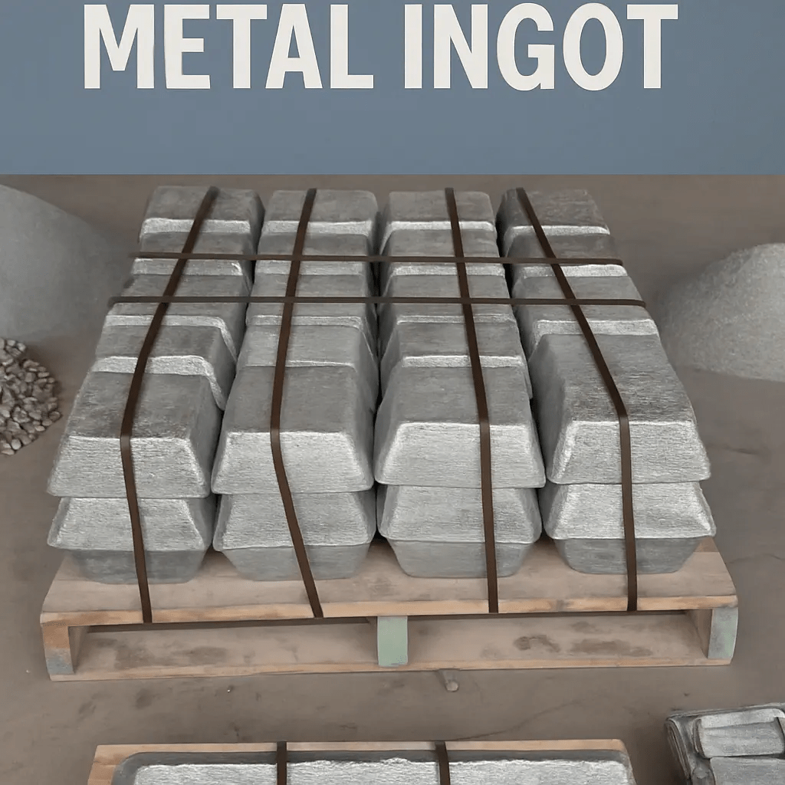
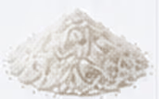
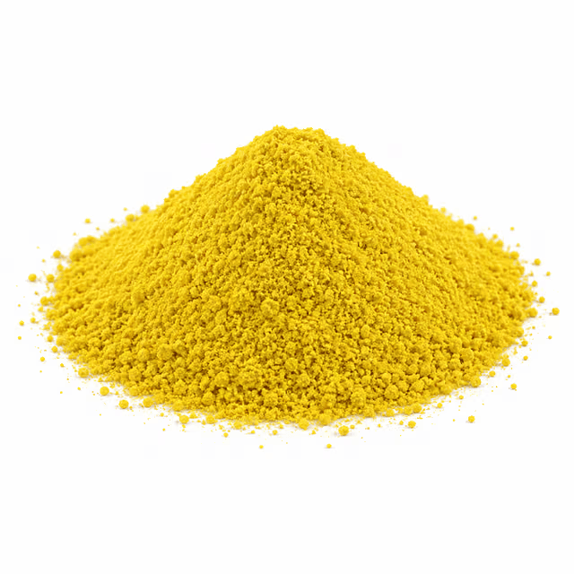
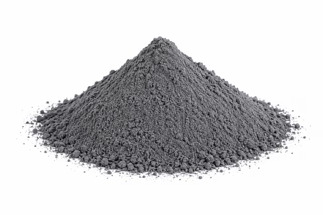
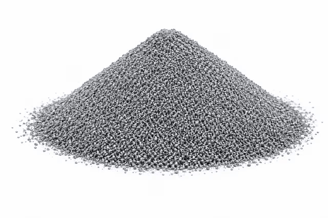
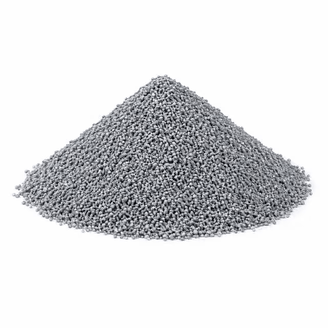
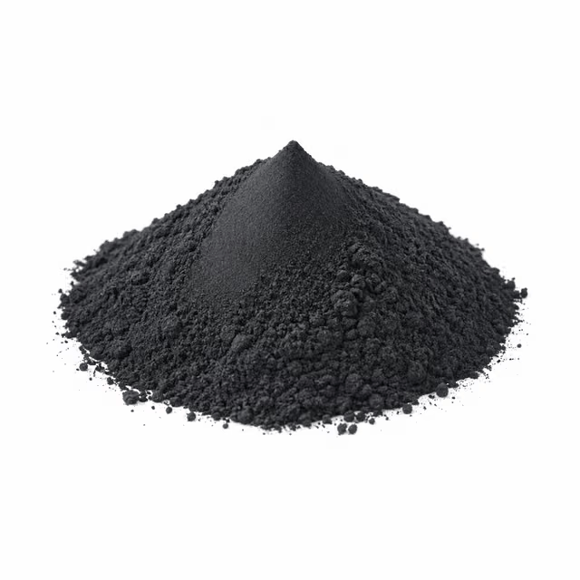
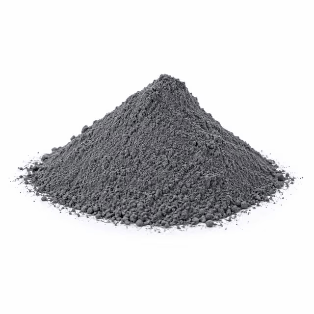

GLOBAL TRADING / 金属・重要素材
← 取扱分野一覧産業を支える金属。
世界につながる調達。
FLUX7では、アンチモン、タングステンおよび関連工業用粉末の調達案件に対応しています。グレード、原産地、供給可否、取引条件は個別に確認します。

02 / 取扱製品
07 製品タングステン・関連粉末
タングステン関連製品6種類と酸化コバルト粉末1種類をご案内します。







インドの輸出管理規制への対応 / 調達手続き
インド輸出管理規制とタングステン製品の調達について
FLUX7がインドから調達するタングステンおよび関連材料の一部は、品目分類、仕様、最終用途に応じて、インドのSCOMET輸出管理規制の対象となる場合があります。対象品目の輸出には、インド外国貿易総局（DGFT）による許可が必要となる場合があり、案件に応じて省庁間作業部会（IMWG）や関係省庁による審査が行われます。
日本国内での調達をご希望の販売代理店、仲介事業者、最終需要家の皆様は、まず当社のお問い合わせページからご連絡ください。初回確認後、必要となる企業情報、製品仕様、用途、最終需要家情報等の提出書類について個別にご案内します。
お問い合わせや受付は、輸出許可、供給数量、納期を保証するものではありません。適用される輸出管理手続きと承認状況により、取引条件が異なります。
調達・申請についてお問い合わせ ↗金属 / 品質管理・原産地
品質管理と原材料のトレーサビリティ。
FLUX7は、ISO 9001:2015の品質マネジメントシステム認証を保有する供給先と連携しています。製品ごとの純度、検査、証明書、トレーサビリティ関連書類は見積もり時に確認します。
ISO 9001:2015
当社の金属製品供給先はISO 9001:2015認証を保有しています。この認証は品質マネジメントシステムに関するもので、個々の製品純度を保証するものではありません。
原産地・トレーサビリティ
原材料原産地：タイ、トルコ、ボリビア
最終製品の原産国：インド
原産地証明書：対象出荷分について、ご要望に応じて確認します。
原産地・トレーサビリティ
原材料原産地：インド
最終製品の原産国：インド
原産地証明書：対象出荷分について、ご要望に応じて確認します。
原材料の原産地、供給先所在地、完成品の原産国は必ずしも一致しません。関連書類は個別の見積もり案件に基づいて確認します。
製品名、純度、数量、納入先、必要書類をお知らせください。供給可否および取引条件は個別に確認します。
必要なグレードをお探しですか。
製品名、純度、数量、納入先、必要書類をお知らせください。製品の供給可否および取引条件は個別に確認いたします。
FLUX7にお問い合わせ ↗